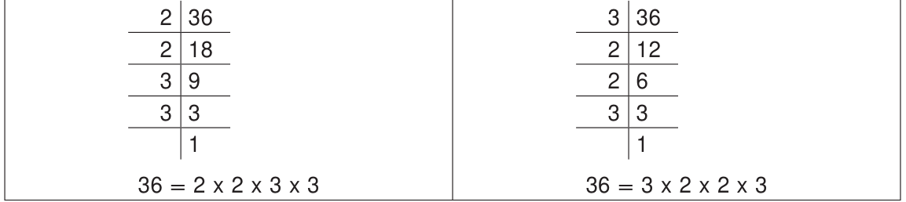
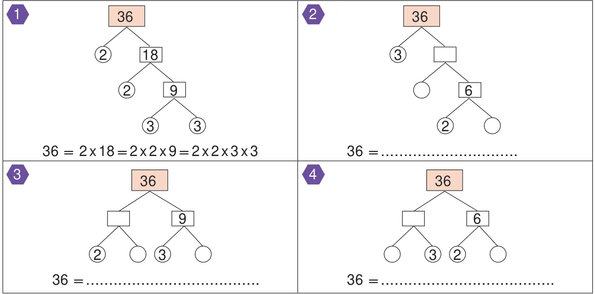
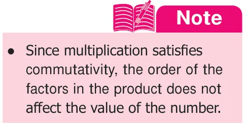
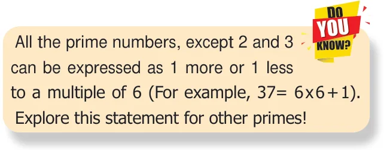

Expressing a given number as a product of factors that are all prime numbers is called the prime factorisation of a number. For example, 36 can be written as product of factors as
\(36 = 1 \times 36\); \(36 = 2 \times 18\); \(36 = 3 \times 12\); \(36 = 4 \times 9\); \(36 = 6 \times 6\)
Here, the factors of 36 can be found easily as 1, 2, 3, 4, 6, 9, 12, 18 and 36. Note that not all the factors of 36 are prime numbers. To find the prime factors of 36, we do the prime factorisation by the following methods.
- Division Method 2. Factor Tree Method
- Division Method: We can find the prime factorisation of 36 as follows:

In the above method, why do we start with 2 or 3 ? why not with 5? Because, we know that 36 is not a multiple of 5 and hence not divisible by 5. So, to find the prime factors of a number, it will be useful to check for divisibility by smaller numbers like 2, 3 and 5 first and not take numbers at random.
- Factor Tree Method:
Another way to find the prime factorisation of a number is to use a visual representation called factor tree. As we add more branches, we will see that this visual representation looks like an upside down tree. Let us find the prime factorisation of 36 as shown below. (Solution for the first one is given for you! Complete the remaining).

What we observe from the above is that, the factors of 36 are the same in all the cases, though the order of the factors is different. Usually, the factors are ordered from the least to the greatest as 2 x 2 x 3 x 3.

